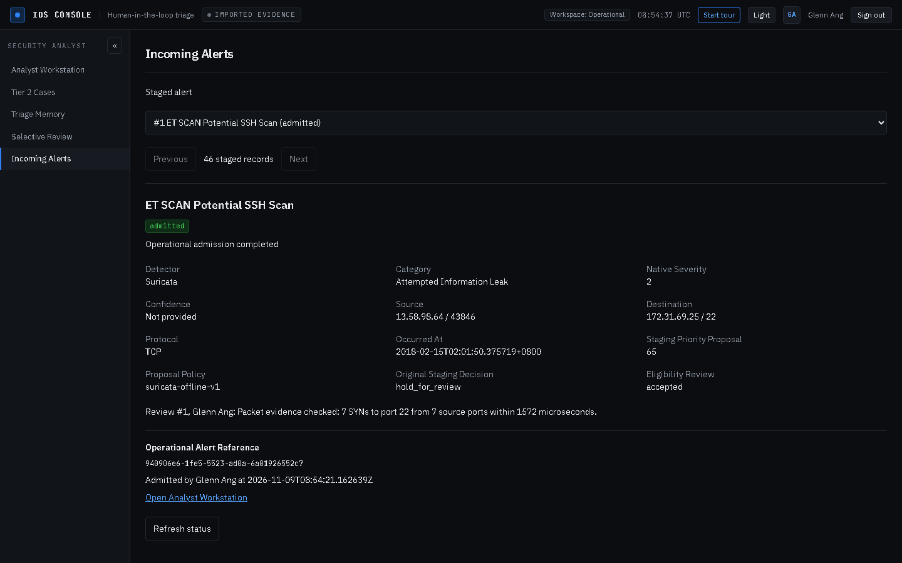
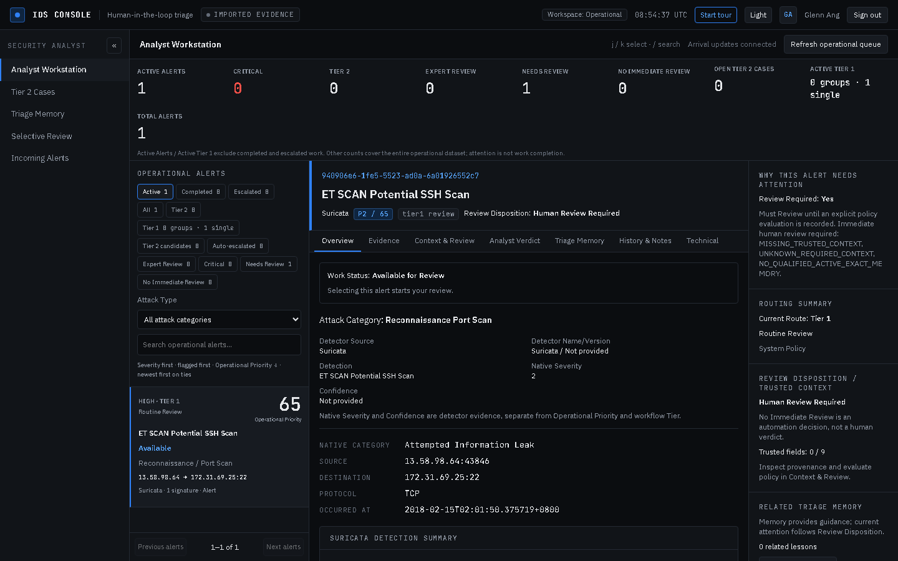
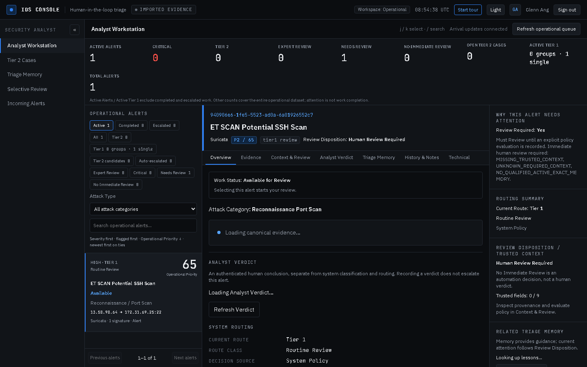
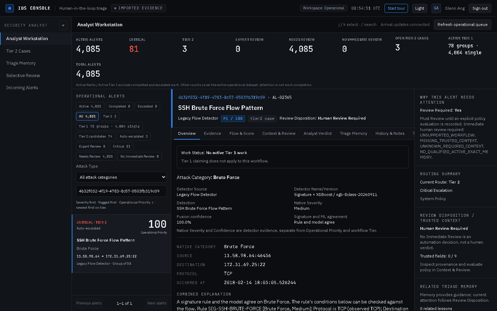
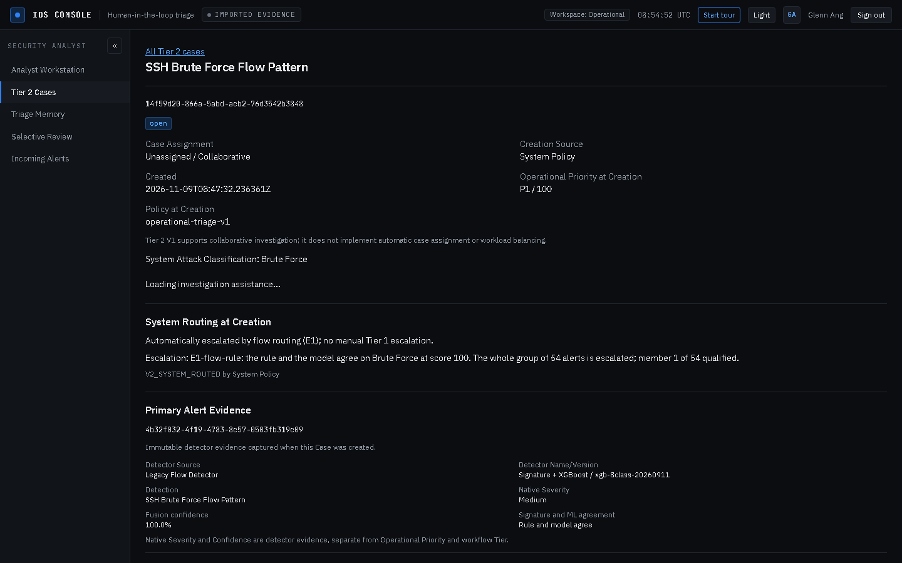

Packet to workstation: one confirmed case, every layer
One real SSH scan and brute-force burst is followed from the raw frames in the capture, through Suricata, into this product's own admission path, and onto the analyst screen. A second, legacy lane shows the same packets through the CICIDS2018 flow model that the product is leaving behind.
Step 1The packet, as it was captured
These are real frames from data/spike/Wednesday-14-02-2018/repaired/172.31.69.25.pcap, the repaired capture of the host 172.31.69.25 on 2018-02-14. The filter was 13.58.98.64 to 172.31.69.25:22.
| Time (UTC) | Source port | TCP flags | IP bytes | TTL | Window | Payload bytes |
|---|---|---|---|---|---|---|
2018-02-14T18:01:50.374537Z | 43840 | SYN | 60 | 63 | 26883 | 0 |
2018-02-14T18:01:50.374568Z | 43838 | SYN | 60 | 63 | 26883 | 0 |
2018-02-14T18:01:50.374573Z | 43842 | SYN | 60 | 63 | 26883 | 0 |
2018-02-14T18:01:50.374880Z | 43840 | ACK | 52 | 63 | 211 | 0 |
2018-02-14T18:01:50.374912Z | 43838 | ACK | 52 | 63 | 211 | 0 |
2018-02-14T18:01:50.374933Z | 43842 | ACK | 52 | 63 | 211 | 0 |
7 SYNs leave for port 22 from 7 source ports inside 1572 microseconds (1.57 ms); the first three land within 36 microseconds. One connection attempt is normal behaviour. This burst is what Suricata's scan rule looks for.
Frame 405673, hex dump (first 54 bytes)
02 d8 a9 4e 38 42 02 ca 69 c4 6d 06 08 00 45 00 00 3c fe 72 40 00 3f 06 dc 96 0d 3a 62 40 ac 1f 45 19 ab 46 00 16 57 bb ab d2 00 00 00 00 a0 02 69 03 53 a6 00 00
| Field | Value |
|---|---|
| Frame number in the capture | 405673 |
| Epoch timestamp | 1518631310.375719 |
| Source to destination | 13.58.98.64:43846 to 172.31.69.25:22 |
| TCP flags | SYN (2) |
| IP total length / frame bytes | 60 / 74 |
| Ethernet destination / source | 02:d8:a9:4e:38:42 / 02:ca:69:c4:6d:06 |
Step 2Suricata reads the packet and writes an alert
Suricata is a standard, third-party engine. This page does not explain how it detects; it shows what it emitted, because that record is the input to this product.
| Field | Value |
|---|---|
| Signature | ET SCAN Potential SSH Scan |
| Signature id / revision | 2001219 / 20 |
| Native severity | 2 |
| Suricata category | Attempted Information Leak |
| Action | allowed |
| Direction | to_server |
| Flow id | 1895176605453914 |
| Frame that raised it (pcap_cnt) | 405673 |
| Timestamp | 2018-02-15T02:01:50.375719+0800 |
Frame 405673 is the same frame decoded in step 1, and the microsecond parts agree: 2018-02-15T02:01:50.375719+0800 in the alert equals 1518631310.375719 in the capture. The link between packet and alert is exact, not a guess from loose time correlation.
The eve.json record, verbatim (metadata shortened)
{
"timestamp": "2018-02-15T02:01:50.375719+0800",
"flow_id": 1895176605453914,
"pcap_cnt": 405673,
"src_ip": "13.58.98.64",
"src_port": 43846,
"dest_ip": "172.31.69.25",
"dest_port": 22,
"proto": "TCP",
"app_proto": null,
"direction": "to_server",
"alert": {
"action": "allowed",
"gid": 1,
"signature_id": 2001219,
"rev": 20,
"signature": "ET SCAN Potential SSH Scan",
"category": "Attempted Information Leak",
"severity": 2,
"metadata": {
"confidence": [
"Medium"
],
"created_at": [
"2010_07_30"
],
"signature_severity": [
"Informational"
]
}
},
"flow": {
"pkts_toserver": 1,
"pkts_toclient": 0,
"bytes_toserver": 74,
"bytes_toclient": 0,
"start": "2018-02-15T02:01:50.375719+0800",
"src_ip": "13.58.98.64",
"dest_ip": "172.31.69.25",
"src_port": 43846,
"dest_port": 22
}
}
Step 3Our ingest reads the Suricata record
scripts/import_suricata_eve.py parses eve.json, validates each record against the canonical alert contract and stages it. Nothing is admitted at this point.
| Field | Value |
|---|---|
| Records parsed | 46 |
| Records staged | 46 |
| Invalid / duplicate / rejected | 0 / 0 / 0 |
| Admission status after import | pending |
| Policy version | suricata-offline-v1 (config/external-admission.json) |
| Proposed priority from native severity | 2 to 65 |
| Staging decision | hold_for_review |
Field by field: what the record contributes
| eve.json field | meaning in our contract | stored column | value for this case |
|---|---|---|---|
alert.signature | detection title | detection_title | ET SCAN Potential SSH Scan |
alert.category | native category | detection_category | Attempted Information Leak |
alert.severity | native severity | native_severity | 2 |
timestamp | occurred at | occurred_at | 2018-02-15T02:01:50.375719+0800 |
src_ip, src_port | source | source_ip, source_port | 13.58.98.64 |
dest_ip, dest_port | destination | destination_ip, destination_port | 172.31.69.25:22 |
proto | protocol | protocol | TCP |
| (none) | confidence | confidence | null: the admission policy rejects a confidence from Suricata |
| (none) | evidence class | proposed_evidence_class | external_rule |
The rule fires on the signature text, and the mapping to our attack class is deterministic: suricata-classification-v3 maps signature 2001219 to reconnaissance_port_scan. The reason recorded is: “Rule reconnaissance: signature 2001219 signature maps to reconnaissance_port_scan.”.
Step 4Eligibility review and admission
An external alert is not trusted on arrival. An analyst records an eligibility decision, then admits it. Both writes are kept with the person and the reason.
| Field | Value |
|---|---|
| Review decision | accepted |
| Review reason | Packet evidence checked: 7 SYNs to port 22 from 7 source ports within 1572 microseconds. |
| Review id / actor | 1 / Glenn Ang |
| Admitted by | Glenn Ang at 2026-11-09T08:54:21.162639Z |
| Operational alert reference | 940906e6-1fe5-5523-ad0a-6a01926552c7 |
| Source kind | external_nids_alert |
What the product decided after admission
| Field | Value |
|---|---|
| Operational priority | 65 from native severity 2 (the policy table, not the class) |
| Priority band | high |
| Handling route | tier1_review |
| Workflow stage | triage |
| Review required | yes |
| System routing decision | tier1_review (class ROUTINE_REVIEW, source system_policy)Known attack classification; no configured trusted critical or expert condition is satisfied. Routine Tier 1 review. |
| Attack category | reconnaissance_port_scan (mapped, source deterministic_suricata_mapping) |
| Learning eligible | no: external rule alerts are isolated until a source-specific family policy is validated |
Native severity 2 maps to priority 65 by config/external-admission.json (severities 1, 2, 3, 4 map to 85, 65, 40, 20). The attack class does not raise it here: an external alert is ranked by what the sensor said, and a human decides the rest.
Step 5How it looks to the analyst
Four screens, taken live from the database that holds this Suricata lane. Read them in order.



The record states both categories, and they differ: Suricata says “Attempted Information Leak”, this product says “Reconnaissance Port Scan”. That is expected. Suricata classifies its own rule; we classify the attack.
Step 6The legacy flow lane, labelled for removal
The same packets also appear as flow features. Here the values are real CICIDS2018 rows, not derived by this page.
The rule that fires on these flows
| Field | Test | Observed | Result |
|---|---|---|---|
protocol | TCP | TCP | pass |
destinationPort | 22 | 22 | pass |
flowPacketsPerSecond | {'min': 10.66689} | 133.8524826661035 | pass |
totalFwdPackets | {'min': 10.0} | 22 | pass |
flowDuration | {'max': 5000000.0} | 336191 | pass |
| Field | Value |
|---|---|
| Rule | SIG-SSH-BRUTE-FORCE (SSH Brute Force Flow Pattern, version s4b-1) |
| Rule strength (sig) | 0.6 |
| Model class / confidence | Brute Force / 0.9999783 |
| Malicious probability (1 - P(Benign)) | 0.99999804 |
| Evidence class | corroborated |
| Fused score | 100 (min(100, max(sig, ml) x 100 + 5) clipped) |
| Severity | Medium from the Brute Force class ceiling (CVSS 5.0), although the score is 100 |
| Group | 54 flows from 13.58.98.64, 18:03:05 to 19:32:12 |
| Routing | tier2_case, priority 100: E1-flow-rule: the rule and the model agree on Brute Force at score 100. The whole group of 54 alerts is escalated; member 1 of 54 qualified. |
| Tier 2 case | 14f59d20-866a-5abd-acb2-76d3542b3848, source system_policy, status open |


Five layers agree on this event: 54 flow records, one rule (SIG-SSH-BRUTE-FORCE), one model verdict, one fused score, one group, and one case. Ground truth for those flows is malicious/Brute Force, so this is a confirmed case, not a guess.
Step 7Why the two lanes do not meet yet
| Suricata lane (target) | Flow lane (legacy) | |
|---|---|---|
| Detector | Suricata signatures, standard rules | Our 16-field rule engine plus the XGBoost model |
| How it enters | Import, eligibility review, admission | Detection run over CICIDS2018 features |
| Score basis | Native severity to priority (2 to 65) | Fused score 0-100, then the class ceiling |
| Class basis | Deterministic signature text mapping | Rule conditions plus model class |
| Route for this case | tier1_review | tier2_case |
| Learning | Not eligible | Eligible, gated by family agreement |
| Screens | Steps 5 | Step 6 |
ValidationError: 3 validation errors for ClassificationPolicy. The cause is packages/detection/system_routing.py:70-75, which re-validates every stored classification_policy snapshot as the Suricata policy type; the flow lane stored a different policy family (flow-classification-v1). A database with no flow routing rows accepts the same alert without error. This page therefore uses two databases, and every screenshot is labelled with its lane. No product code was changed.Consequence for the roadmap: moving to a Suricata-first pipeline is not only a detector swap. The admission path, the classification policy and the routing policy each need one owner per lane, and the version guard needs to compare like with like. Until that is done, a deployment that runs both detectors cannot merge their queues.
Step 8What was checked
| Check | What was measured | Detail | Result |
|---|---|---|---|
| The alert names the frame that raised it | pcap_cnt 405673 equals frame 405673 | same microsecond: 2018-02-15T02:01:50.375719+0800 vs 1518631310.375719 | pass |
| The decoded frame is the same flow | 13.58.98.64:43846 to 172.31.69.25:22 | matches the alert 5-tuple | pass |
| Every staged record is valid | 46 parsed, 0 invalid | 46 staged | pass |
| One admission produces one queue row | 1 admission, 1 operational alert | pass | |
| The class comes from the policy | reconnaissance_port_scan by deterministic_suricata_mapping | policy suricata-classification-v3 | pass |
| The flow lane is one group | 54 members | one representative | pass |
| The flow lane is a confirmed case | malicious/Brute Force | ground truth joined after detection | pass |
| The case was opened by policy | source system_policy | status open | pass |
Reproduce it
python analysis/phase-f/packet-to-workstation/p2w_capture.py # packets + the eve record python analysis/phase-f/packet-to-workstation/p2w_data.py suricata # DB #1: stage, review, admit python analysis/phase-f/packet-to-workstation/p2w_data.py flow # DB #2: legacy flow lane bash analysis/phase-f/pw_run.sh p2w-suricata p2w-flow # the 8 screenshots python analysis/phase-f/packet-to-workstation/build_page.py # this page